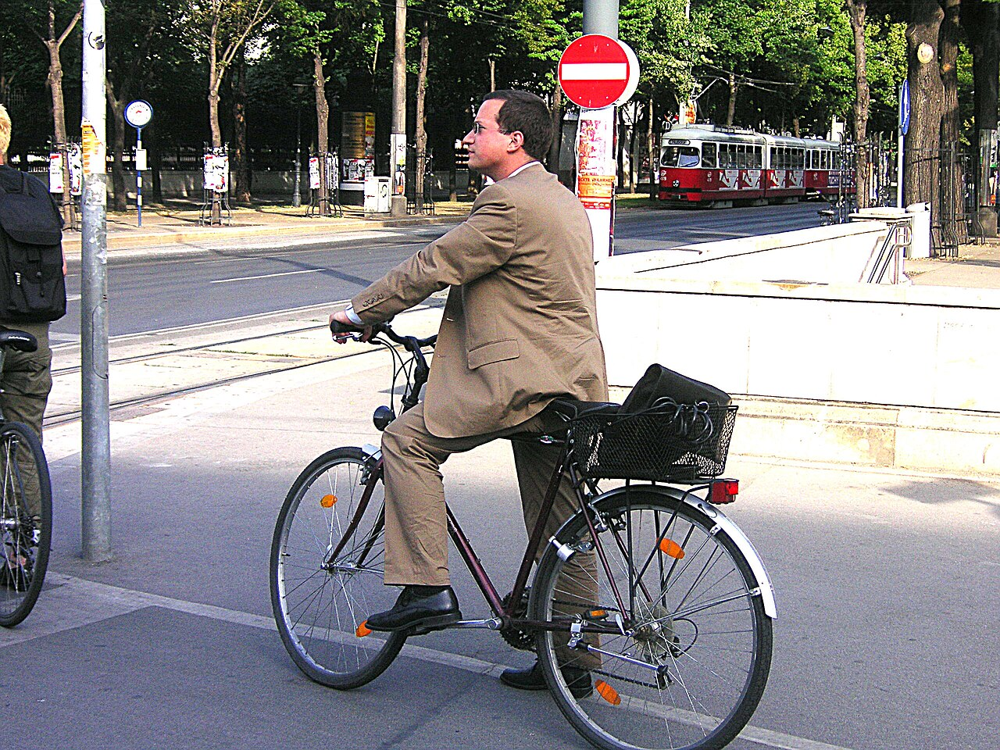

Đi bộ nhẹ hoặc đạp xe chậm có thể tạo cảm giác dễ chịu sau tập. Thải lactate nhanh hơn không đồng nghĩa giảm đau cơ ngày hôm sau hay tăng tốc sửa chữa cơ; lactate không phải chất độc tồn đọng gây đau cơ muộn.
Tình huống minh họa: Hôm sau buổi tập chân, bạn chỉ mỏi nhẹ và muốn đi bộ. Một hoạt động dễ chịu có thể phù hợp, nhưng nếu đau khu trú hoặc đi lại làm đau tăng, tình huống đã khác. Quyết định nên dựa trên phản ứng thực tế, không dựa vào niềm tin phải vận động để thải chất độc còn nằm trong cơ.
Lactate, đau cơ muộn và phục hồi không phải cùng một việc
Sau một buổi tập, nhiều quá trình diễn ra đồng thời: điều chỉnh tuần hoàn, sử dụng và tái tạo nhiên liệu, đáp ứng mô cơ, ngủ và cảm giác mệt. Vì vậy, một biện pháp làm bạn thấy dễ chịu ngay không tự chứng minh đã tăng tốc mọi phần phục hồi. “Cảm thấy đỡ” và “sẵn sàng lặp lại buổi nặng” là hai kết quả khác nhau.

Lactate là một phần của chuyển hóa và có thể được dùng làm nhiên liệu; nó không phải chất độc nằm lại trong cơ nhiều ngày gây đau cơ muộn. Vận động nhẹ có thể thúc đẩy xử lý lactate trong một số bối cảnh, nhưng điều đó không đủ để kết luận sẽ giảm đau cơ ngày hôm sau hoặc sửa chữa mô nhanh hơn.
Phục hồi chủ động phù hợp khi mức vận động thật sự nhẹ và bạn thấy dễ chịu. Nếu biến ngày nghỉ thành một buổi cardio để tăng điểm app, bạn đã tạo thêm tải. Ngược lại, nghỉ hoàn toàn có thể phù hợp khi đang bệnh, rất mệt hoặc cần bảo vệ chấn thương. Chọn phương án dựa trên triệu chứng và kế hoạch chung, thay vì xem một bên luôn vượt trội. 1 2
Thích nghi, quá tải và chẩn đoán loại trừ
Tập luyện tạo kích thích và mệt mỏi; thời gian hồi phục giúp chuyển kích thích đó thành thích nghi. Sơ đồ siêu bù trừ là cách minh họa khái niệm, không phải đường cong dự báo chính xác hiệu suất của mỗi người sau từng buổi. Không thể chỉ đọc một đồ thị để biết ngày nào bắt buộc phải đạt kỷ lục.
Đồng thuận ECSS/ACSM phân biệt quá tải chức năng, quá tải không chức năng và hội chứng tập quá sức bằng diễn biến hiệu suất, khả năng hồi phục và đánh giá lâm sàng. Ranh giới không được xác định bằng một tỷ lệ HRV giảm cố định. Những biểu hiện như mệt, ngủ kém và giảm thành tích cũng có thể gặp khi thiếu năng lượng, thiếu máu, nhiễm bệnh hoặc có vấn đề sức khỏe khác.
Vì vậy, giảm tải là một cách điều chỉnh chương trình, không phải phép thử tự chẩn đoán: nếu nghỉ vài ngày vẫn chưa tốt, chưa đủ kết luận bạn đang ở một giai đoạn “suy kiệt đối giao cảm”. Hãy nhìn vào xu hướng, mức ăn uống, áp lực cuộc sống và triệu chứng. Người có dấu hiệu kéo dài cần được tìm nguyên nhân trước khi tiếp tục thử những lịch tập ngày càng phức tạp. 3 2 4
Talk test, HRmax và HRR: ba cách không hoàn toàn giống nhau
Cường độ có thể được mô tả theo công việc bên ngoài như tốc độ, hoặc phản ứng bên trong như nhịp tim và cảm giác gắng sức. Cùng một tốc độ chạy có thể nhẹ với người này và nặng với người khác. Nhiệt, mệt và thuốc cũng có thể làm quan hệ giữa tốc độ và mạch thay đổi.
Phần trăm nhịp tim tối đa và phần trăm dự trữ nhịp tim dùng mẫu số khác nhau. Dự trữ nhịp tim là chênh lệch giữa nhịp tối đa và lúc nghỉ. Vì vậy, không lấy một phần trăm của hệ này để đọc bảng của hệ kia. Công thức dự đoán nhịp tối đa theo tuổi chỉ là ước lượng, không phải ngưỡng sinh lý được đo của riêng bạn.
Talk test cung cấp cách kiểm tra thực tế hơn khi không có đo chuyên sâu: ở mức vừa thường còn trò chuyện được, trong khi mức mạnh khiến bạn khó nói nhiều từ liền. Tuy nhiên, nó không xác nhận chính xác ngưỡng lactate hoặc “Zone 2” trong mọi mô hình ba hay năm vùng. Nên ghi rõ hệ vùng đang dùng rồi kết hợp phản ứng thực tế, thay vì biến màu trên đồng hồ thành ranh giới tuyệt đối. 5 6
Bảng đối chiếu để đọc đúng thông tin
| Lựa chọn | Khi có thể phù hợp | Khi nên xem lại |
|---|---|---|
| Vận động nhẹ | Mỏi nhẹ, thấy dễ chịu khi di chuyển | Đau tăng hoặc biến thành buổi tập nặng |
| Nghỉ hoàn toàn | Rất mệt, đang bệnh hoặc cần bảo vệ mô | Triệu chứng kéo dài chưa rõ nguyên nhân |
| Điều chỉnh tải tuần | Mệt tích lũy hoặc hiệu suất giảm | Chỉ giảm điểm app mà không xem ngủ và ăn |
| Đánh giá chuyên môn | Đau khu trú, chấn thương, diễn biến kéo dài | Không cần chờ đạt ngưỡng HRV |
Ứng dụng thực tế: làm gì và đánh giá bằng cách nào?
Nếu chỉ mỏi nhẹ, thử vận động dễ chịu và dừng khi đau tăng. Khi mệt rõ, ngủ kém hoặc đang bệnh, nghỉ hoàn toàn có thể phù hợp hơn. Ưu tiên ngủ, ăn đủ và điều chỉnh buổi tập kế tiếp.
- Kiểm tra bạn đang xem gì. Xác định tên chỉ số, cách thiết bị lấy mẫu và điều kiện đo trước khi so sánh.
- Đặt cạnh bối cảnh. Ghi giấc ngủ, vận động, bệnh gần đây, thuốc và cảm giác; nhiều yếu tố có thể thay đổi cùng lúc.
- Chọn phản ứng phù hợp. Điều chỉnh để hỗ trợ sức khỏe hoặc sự dễ chịu, không để ép một đường cong đạt mục tiêu.
- Xem diễn biến. Mẫu nhiều lần đo hữu ích hơn một điểm đơn lẻ, nhưng triệu chứng mới hoặc nặng không cần chờ đủ số ngày mới được đánh giá.
Khi nào nên tìm hỗ trợ?
Không có phương pháp phục hồi tốt nhất cho mọi người. Bằng chứng về hạ nhiệt chủ động đối với đau cơ và hiệu suất buổi sau còn hạn chế.
Đau khu trú, sưng hoặc yếu bất thường cần kiểm tra; không cố vận động xuyên qua chấn thương nghi ngờ.
Nguồn tham khảo và phạm vi hỗ trợ
-
Van Hooren & Peake (2018) — Do We Need a Cool-Down After Exercise? — Narrative review. Hỗ trợ: Hạn chế bằng chứng về giảm đau cơ và phục hồi nhờ hạ nhiệt chủ động.
-
Kellmann et al. (2018) — Recovery and Performance in Sport: Consensus Statement — Consensus statement. Hỗ trợ: Phục hồi cần cá nhân hóa, gồm tải tập và áp lực cuộc sống.
-
Meeusen et al. (2013) — Prevention, diagnosis, and treatment of the overtraining syndrome — Joint consensus statement. Hỗ trợ: Quá tải, chẩn đoán loại trừ và thiếu chỉ dấu đơn lẻ.
-
Mountjoy et al. (2023) — IOC consensus statement on Relative Energy Deficiency in Sport (REDs) — Consensus statement. Hỗ trợ: Thiếu năng lượng, xương, kinh nguyệt và đánh giá đa chuyên ngành.
-
CDC — Measuring Physical Activity Intensity — Public health guidance. Hỗ trợ: Talk test phân biệt vận động vừa và mạnh.
-
WHO — Physical activity — Public health guideline summary. Hỗ trợ: Khuyến nghị vận động theo nhóm đối tượng.
Cập nhật nội dung và nguồn: 26/10/2026. Nội dung giáo dục; chưa có xác nhận duyệt bởi bác sĩ.